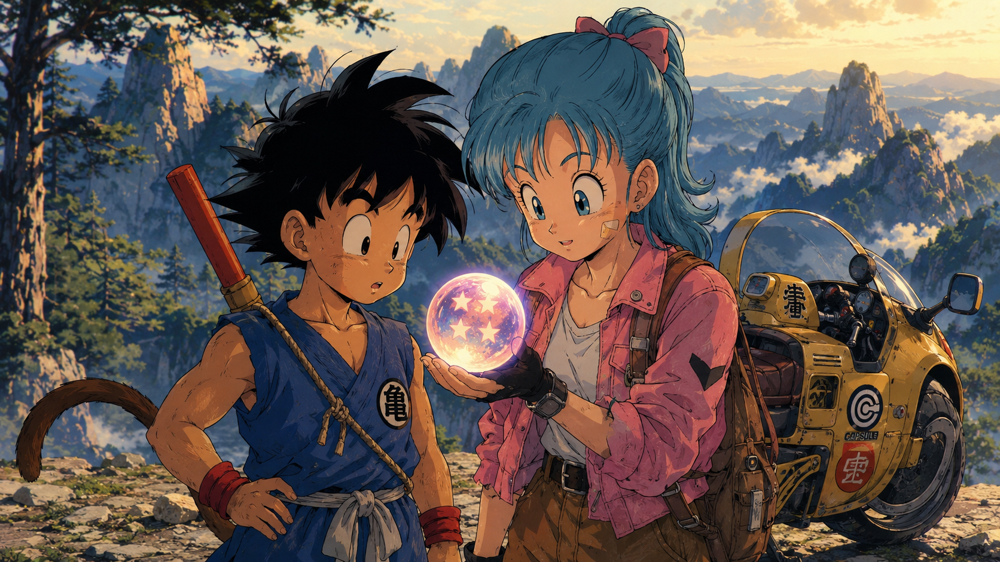
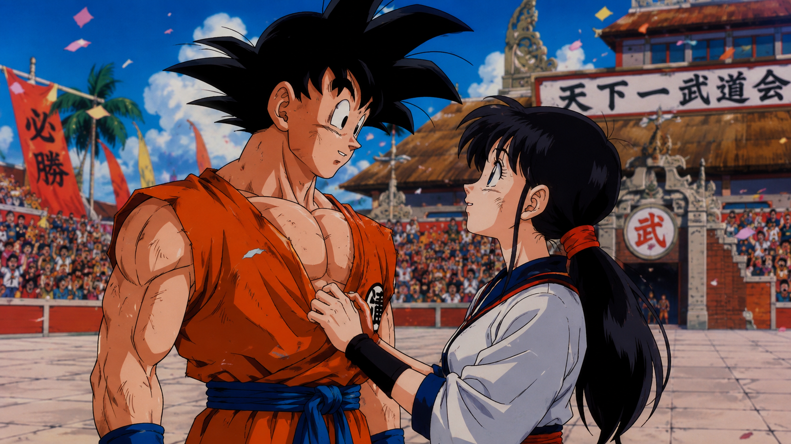

『ドラゴンボール』の主人公・孫悟空。彼は物語の終盤、地球を救う最強の戦士へと成長しますが、その原点は少年時代の「出会い」にありました。
数あるエピソードの中でも、ファンを驚かせたのが第23回天下一武道会でのチチとの電撃結婚です。なぜ、最初のヒロインであるブルマではなくチチだったのか？今回は、悟空の「出会いから結婚」までの軌跡を振り返り、悟空という男の誠実さについて考察します。
Goku grows into the universe's strongest warrior, but his origin lies in childhood encounters. Why Chichi and not Bulma? Let's trace his journey from encounter to marriage and examine Goku's sincerity.
Sangoku devient le plus grand guerrier de l'univers, mais ses origines résident dans ses rencontres d'enfance. Pourquoi Chichi et non Bulma ? Retour sur ce parcours et sur la sincérité de Sangoku.

01 すべての始まり：ブルマとの「利害関係」から始まった冒険
物語の第1話、山奥で暮らしていた悟空は、少女ブルマと衝撃的な出会いを果たします。
ブルマにとって悟空は「ドラゴンボールを探すための便利なボディーガード」であり、悟空にとってもブルマは「じいちゃんの形見（四星球）を一緒に探す旅の連れ」でした。
お互いに恋愛感情は一切なく、むしろ「都会の常識」と「大自然の野生児」という真逆のコンビだからこそ、初期のコミカルでワクワクする冒険が生まれました。ブルマは当時「素敵な恋人」を探していましたが、幼すぎる悟空は最初から恋愛対象外だったのです。
In Episode 1, Goku meets Bulma. To Bulma, Goku was a bodyguard. To Goku, she was a companion to search for his grandfather's keepsake. There was no romance—just two opposites embarking on a comical adventure.
Au premier épisode, Sangoku rencontre Bulma. Pour elle, il est un garde du corps. Pour lui, elle est une coéquipière. Sans la moindre romance, ce duo mal assorti donne naissance à une aventure captivante.
02 チチとの出会いと、あまりにも有名な「あやふやな約束」
その後、フライパン山で出会ったのが牛魔王の娘・チチです。
チチは純粋な悟空に惹かれ、別れ際に「大きくなったら嫁に貰いに来ておくれ」と約束を迫ります。しかし、当時の悟空は「結婚（けっこん）」が何のことか分かっていませんでした。
「（美味いもんだと思って）んだ！」と答えてしまったこの口約束が、のちに2人の運命を決定づけることになります。悟空にとってはただの勘違い、しかしチチにとっては人生をかけた本気の約束でした。
At Mt. Frypan, Goku meets Chichi. She falls for him and asks him to marry her when they grow up. Goku, misunderstanding "marriage" for something tasty, agrees.
Au mont Frypan, Sangoku rencontre Chichi. Elle tombe amoureuse de lui et lui demande de l'épouser plus tard. Sangoku, confondant « mariage » et nourriture, accepte sans comprendre.


03 なぜブルマではなくチチだったのか？
もしブルマが悟空の成長を待っていれば、2人が結ばれる未来はあったのでしょうか？
のちの「人造人間編」で、たくましく成長した悟空を見たブルマが「あたしが付き合っちゃえばよかったかな」と冗談めかして呟くシーンがあります。しかし、ブルマと悟空は「何でも言い合える親友（相棒）」のポジションを確立しすぎていました。
一方でチチは、悟空がどれだけ有名になろうと、世界を救う英雄になろうと、一途に「フライパン山での約束」だけを信じて自分を磨き続けていました。この「一途さ」こそが、のちに悟空の心を動かす最大の要因となります。
Goku and Bulma became irreplaceable best friends rather than lovers. On the other hand, Chichi held onto that single promise at Mt. Frypan with unwavering devotion.
Sangoku et Bulma sont devenus de grands amis. En revanche, Chichi est restée fidèle à la promesse du mont Frypan pendant des années.
04 天下一武道会での再会：男・悟空が見せた「究極の筋の通し方」
数年後、大人になったチチは、約束を忘れてしまった悟空に会うために天下一武道会へ匿名で出場します。リングの上で正体を明かされ、自分がした約束の内容を初めて理解した悟空。
ここで悟空が放った一言は、彼の人間性を象徴しています。
普通なら「子供の頃の勘違いだから」と言い訳してもおかしくない場面です。しかし悟空は、自分が口にした言葉にどこまでも誠実でした。恋愛感情から始まった結婚ではなく、「一度交わした約束は、どんな理由であれ絶対に守る」という、悟空の真っ直ぐな義理堅さがこの結婚劇には詰まっています。
When her identity is revealed and Goku finally understands what marriage means, he simply says: "Well, I promised, so let's get married!" He kept his word with utmost sincerity.
Quand Sangoku comprend enfin ce qu'est le mariage, il répond simplement : « J'ai promis, alors marions-nous ! » Sans chercher d'excuses, il a honoré sa parole.
★ READERS QUESTION ★
「もしあなたが悟空の立場なら、どうした？」 "If you were Goku, what would you do?" « Si vous étiez à la place de Sangoku, que feriez-vous ? »
管理人：KAZUYA
初期ドラゴンボール考察ブロガー
初期の『ドラゴンボール（少年期）』をこよなく愛する考察ブロガー。
悟空がブルマと出会い、筋斗雲に乗り、天下一武道会で熱い泥臭いバトルを繰り広げていたあの頃のワクワク感が忘れられず、ブログを開設しました。
単なる強さのインフレだけではない、鳥山明先生が描いた「キャラクターの人間味」や「技の工夫」を独自の視点で掘り下げていきます。初期DBファンのみなさんと、コメント欄やお問合せから熱く語り合えたら嬉しいです！
熱い感想・考察リクエスト Contact & Feedback Contact & Avis
「初期DBのここが好き！」「このエピソードも語ってほしい！」など、あなたの熱いメッセージをお待ちしています！ Feel free to send us your thoughts or essay requests! N'hésitez pas à nous envoyer vos impressions !
免責事項・著作権について Disclaimer & Copyright Notice Mentions Légales & Droits d'Auteur
当ブログ（四星球のキセキ 〜初期ドラゴンボール徹底考察〜）は、個人が趣味で運営する非公式のファンブログであり、版権元である著者、出版社、アニメ制作会社等の各企業様とは一切関係ありません。
ブログ内で使用・引用している画像、台詞、キャラクター等の著作権・肖像権・商標権などのすべての知的財産権は、著作者（鳥山明 / とよたろう / バード・スタジオ）、出版社（集英社）、東映アニメーション、およびその権利所有者に帰属します。
当ブログは著作権の侵害を目的としたものではありません。記事内の引用につきましては、著作権法第32条で定められた「引用の正当な範囲」を遵守し、出所を明記した上で掲載しております。
万が一、掲載内容に不適切な点や、権利を侵害するような箇所がございましたら、大変お手数ですがお問い合わせフォーム（2026webai@gmail.com）より権利所有者様ご本人様からご連絡いただけますようお願い申し上げます。確認後、速やかに削除や修正等の適切な対応をいたします。
また、当ブログのコンテンツ・情報につきまして、可能な限り正確な情報を掲載するよう努めておりますが、誤情報が入り込んだり、情報が古くなっていることもございます。当ブログに掲載された内容によって生じた損害等の一切の責任を負いかねますので、ご了承ください。
This website ("Kiseki of the Four-Star Ball") is an unofficial fan blog operated independently for fan research purposes and is not affiliated with, endorsed by, or connected to the author, publishers, or animation studios.
All intellectual property rights, including copyrights, trademarks, and character designs cited on this blog, belong to their respective owners: Akira Toriyama, Toyotarou, Bird Studio, Shueisha, Toei Animation, and related companies.
This site does not intend to infringe upon any copyrights. Quotations and imagery are used strictly under fair use / legitimate citation principles for commentary and analytical purposes.
If you are a copyright holder and believe any content on this site infringes your rights, please contact us at 2026webai@gmail.com. We will promptly address and remove any requested content upon verification.
While we strive for accuracy, the owner assumes no liability for any actions taken based on the information provided on this site.
Ce site ("Kiseki of the Four-Star Ball") est un blog de fans non officiel géré à titre privé. Il n'est en aucun cas affilié, approuvé ou lié à l'auteur original, à la maison d'édition ou aux studios d'animation.
Tous les droits de propriété intellectuelle, y compris les droits d'auteur et marques cités, appartiennent à leurs propriétaires respectifs : Akira Toriyama, Toyotarou, Bird Studio, Shueisha, Toei Animation et leurs ayants droit.
Ce blog n'a aucune intention de porter atteinte aux droits d'auteur. Les citations et images sont utilisées à des fins d'analyse, de critique et d'étude de manière légitime.
Si vous êtes titulaire des droits et constatez un contenu inapproprié, veuillez nous contacter via 2026webai@gmail.com. Nous procéderons à la modification ou suppression immédiate après vérification.
Le propriétaire décline toute responsabilité quant aux erreurs ou dommages pouvant résulter de l'utilisation des informations présentes sur ce site.